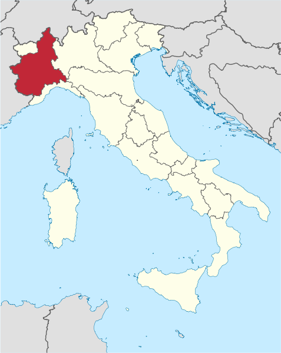

In July 2018 we spent about a week in the Piedmont region, located north west in Italy. We were exploring and tasting a lot of Barbera, Barbaresco and Barolo wines. During our days in this magnificent wine district, we visited the villages Alba, Neive, Barbaresco, La Morra, Novello and Barolo. Both Barolo and Barbaresco are on the UNESCO World Heritage List. The Barbaresco wine is produced exclusively from the Nebbiolo variety. Even though it is not as famous as its counterpart Barolo, we think the wine should be equally acknowledged. Compared to Barolo, the Barbaresco production amounts to only one-third. The wine tends to be not as powerful as Barolo, but there are several examples of nice Barbarescos that are just as rich on the plate.
You can store a quality Barbaresco for many years in your cellar, since it ages nicely like good Barolos. Bekkekjeller’n had the pleasure of a visit to the Prinsi Winery, owned by the Lequio family, located in Neive. Neive is locally known as Langhe, in the Barbaresco growing area. The Lequio family has been running the winery for three generations, and the first bottling started back in the 1940s. They produce a total of thirteen different wines, including three excellent Barbaresco DOCG (Gaia Principe, Gallina and Fausoni Riserva). The winery estate spreads over 25 hectares. Prinsi is not represented at the Norwegian Vinmonopol, but Bekkekjeller’n has some cases of really nice wine for offer.
